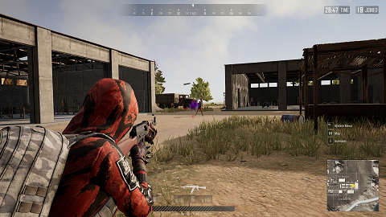

Bevezetés
A játék Többjátékos módban játszható. Először egy repülőgépből kiugorva le kell ejtőernyőznünk a szigetre, ahol földetérés után fegyvereket, páncélokat és hátizsákot kell találni, majd meg kell küzdeni a többi játékossal. A szigeten van egy kör, ami még jobban közelebb keríti a játékosokat egymáshoz. A kört egy másik kék kör követi amiben a játékos folyamatosan sebződik, minél kisebb a kör annál jobban, a kék és a fehér kör között még ártatlan (sértetlen) a játékos. Az győz aki utolsónak marad talpon a szigeten. Emellett vezethetünk autókat, motorokat és hajókat, amikkel utazhatunk egyik helyről a másikra.

- Solo: Egyedül játszani más egyedüli játékosok ellen
- Duo: Egy csapattárssal harcolni ketten a többi páros ellen
- Squad: Négy játékos együtt a többi, ugyanekkora csapat ellen
- 3 Man Squad: Három játékos játszik négy, vagy másik három ellen
- 1 Man Squad: Egyedül a négytagú csapatok ellen
- Custom Match: Beállíthatjuk, hogy mennyi ember legyen az elején maximum és az időjárás is szabályozható.
- Zombie Mode: Emberek a zombik ellen
- E-sport Mode: Ezt a módot bajnokságokon szokták használni.
- War Mode: Ebben a játékmódban csak az emberek ölésén van a hangsúly. Lehetünk egyedül, de csapatban is játszhatunk.
Minden jog fenntartva!